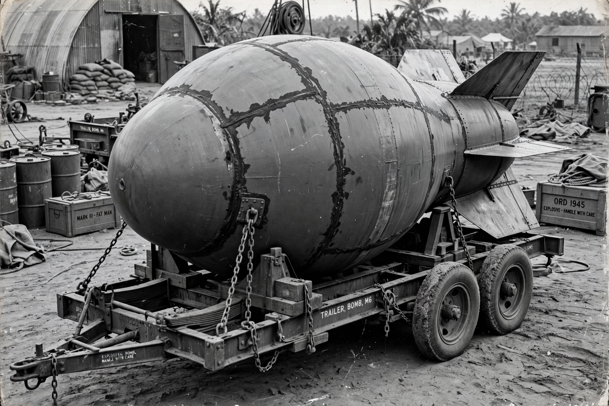

Fat Man
From Wikipedia, the free encyclopedia

[Image: The Fat Man bomb casing on its transport carriage, Tinian, 1945]The Fat Man bomb casing on its transport carriage, Tinian, 1945
Fat Man was the codename for the plutonium implosion-type atomic bomb detonated over the Japanese city of Nagasaki on 9 August 1945. It was the second and last nuclear weapon used in warfare.
Because plutonium produced in reactors contained plutonium-240, which fissions spontaneously too readily for a gun-type design, the Manhattan Project developed an implosion weapon: a subcritical plutonium core surrounded by precisely shaped explosive lenses that compressed it symmetrically to supercritical density. The design was proven at the Trinity test on 16 July 1945.
Dropped by the B-29 Bockscar, piloted by Major Charles Sweeney, the bomb exploded at an altitude of about 500 metres over the Urakami valley with a yield of roughly 21 kilotons. Tens of thousands of people were killed, the majority civilians, with deaths from the blast, burns and radiation continuing afterwards. Six days later Japan announced its surrender.
See also
Atomic bomb · Nagasaki · Manhattan Project · Little Boy · Nuclear weapon